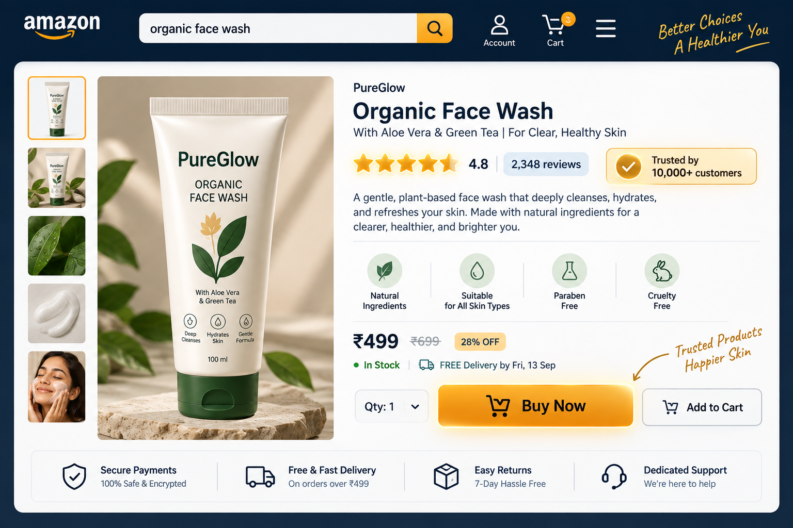
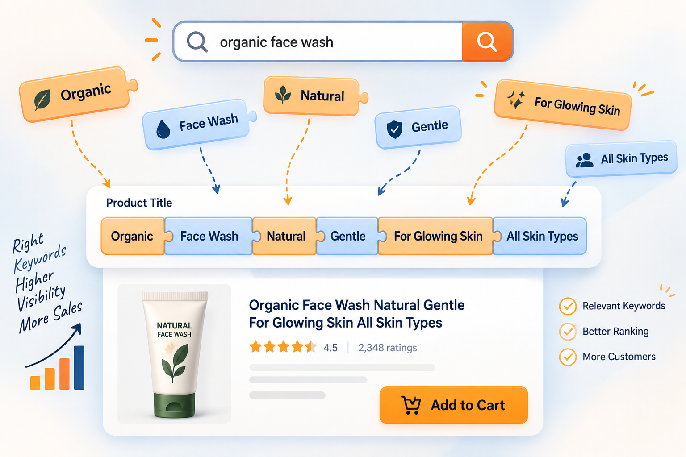
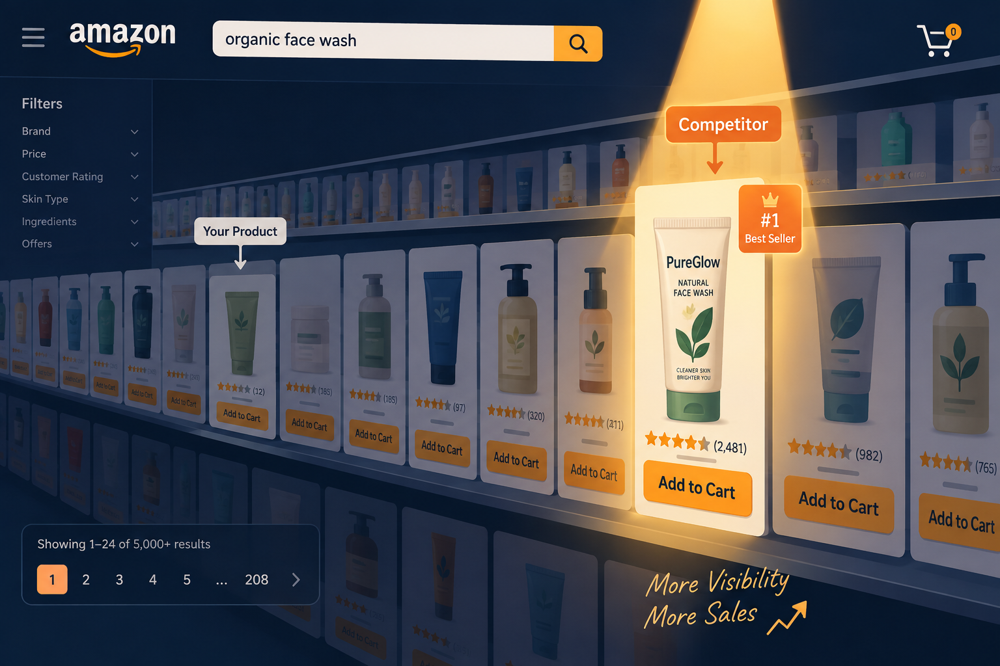
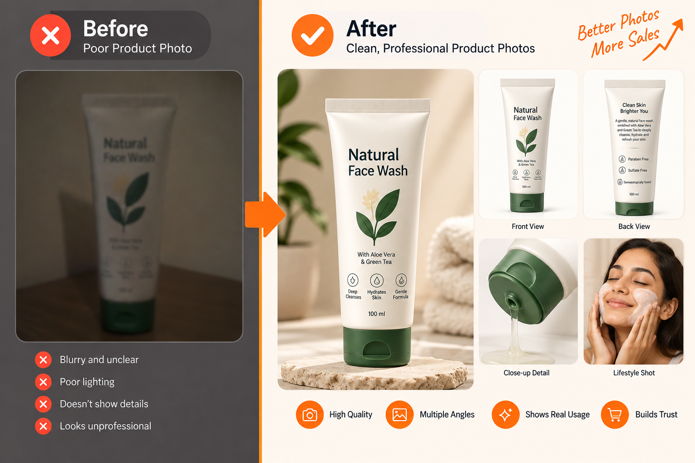
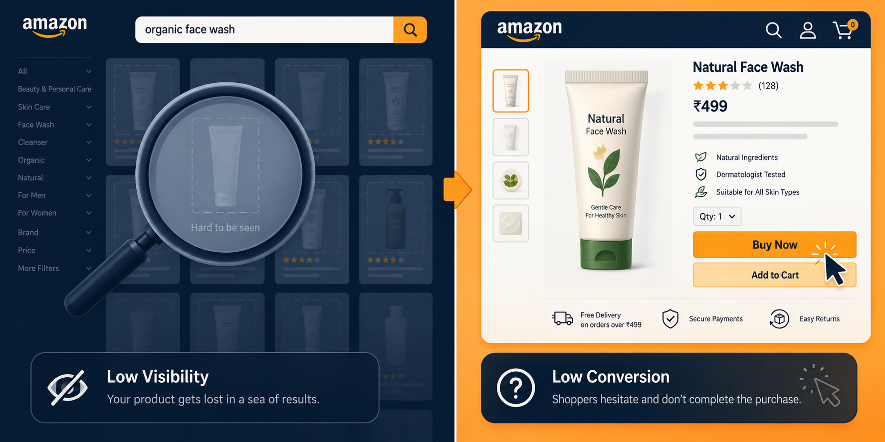

You uploaded your product weeks ago. Maybe months. The views trickle in slowly, if at all. The few people who click through do not buy. Meanwhile, a competitor selling something almost identical — sometimes lower quality — is collecting reviews and sales every week.
It is tempting to blame the platform, the algorithm or “the market being tough right now.” But in most cases, the real problem is closer to home: your listing is not built to be found or to convert.
Amazon, Flipkart and Meesho are search engines and sales pages rolled into one. If either half of that equation is broken, sales stall no matter how good the product is.
Your product is fine. Your listing is invisible — or unconvincing.
Marketplace listings fail
in two different ways.
Every underperforming listing has one or both of these problems:
- A visibility problemYour product is not showing up when the right buyers search for it.
- A conversion problemPeople find the listing, but do not trust it enough to buy.
A strong marketplace listing has to win both moments: appearing in the right search and making the click feel like a safe decision.

Why your listing
is not being found.
1. Weak or missing keywords
Marketplace search algorithms match buyer searches to the words in your title, bullet points and backend keyword fields. If the title is vague or overly branded without describing the product, you disappear from relevant searches.
The fix: Research the exact terms real buyers use and include them naturally in the title, bullets and backend fields — not only your brand name.

2. Incomplete or thin product information
Marketplaces reward listings that provide complete, structured information because it improves the buying experience and reduces uncertainty. Missing attributes also make filtering and comparison harder.
The fix: Fill out every relevant field completely — size, material, colour, variants and use case — rather than leaving details blank or vague.
3. Low sales velocity and few reviews
Marketplace algorithms favour listings with sales history and review volume because those signals suggest proven demand. A slow start can quietly suppress visibility even further.
The fix: Use smart pricing, promotions or paid marketplace ads to build the first wave of sales and reviews so organic ranking has a chance to catch up.

4. The wrong category
An overly broad or mismatched category buries the product under thousands of irrelevant competitors instead of placing it where focused buyers are already filtering.
The fix: Choose the most specific, accurate category and sub-category available. Narrower is usually better when it is still truthful.
Why people see it
but do not buy.
5. Product photos do not build confidence
Blurry images, poor lighting, no lifestyle shots or too few angles leave buyers guessing. On a marketplace full of alternatives, guessing rarely ends in a purchase.
The fix: Use clean white-background shots, lifestyle or in-use images and close-ups that show quality and detail. Multiple angles reduce hesitation.

6. The title confuses instead of clarifying
An overstuffed keyword-jammed title, or one that is too vague, makes shoppers unsure what they are looking at in the first two seconds of scanning results.
The fix: Lead with the core product name and most important feature, structured for both readability and search. Clarity outperforms stuffing.
7. Bullet points list features instead of benefits
“100% cotton” tells a buyer what the product is made of. It does not explain why that matters. Buyers convert on benefits, not specifications alone.
The fix: Pair each feature with the benefit it delivers: “100% breathable cotton — stays cool during long work days.”
8. Few reviews or no response to negative ones
Reviews are one of the strongest trust signals on any marketplace. Few reviews or unanswered negative feedback creates hesitation at the exact moment someone is deciding whether to buy.
The fix: Encourage reviews after purchase and respond professionally to negative feedback. Both signal an active, trustworthy seller.
9. Price does not match perceived value
Pricing too high without enough trust signals causes hesitation. Pricing too low can raise doubts about quality just as quickly.
The fix: Align price with the trust signals currently present. As reviews, images and brand presence improve, pricing can move upward with less resistance.
Is it a visibility problem
or a conversion problem?
Use the symptom to decide where to look first.
| Symptom | Likely issue |
|---|---|
| Very few views or impressions | Visibility problem — keywords, category or backend search terms. |
| Decent views, but very few clicks | Title or thumbnail image problem. |
| Good clicks, but low conversion | Photos, bullet points, reviews or pricing mismatch. |
| Sales dried up after an initial spike | Sales velocity or ranking drop — a review or promotion push may be needed. |
The best product is not enough.
The best-presented product wins.
With more sellers listing near-identical products every day, marketplaces increasingly reward listings that are complete, keyword-optimized and trust-building — and quietly bury the ones that are not.
Winning on marketplaces is not only about having a better product. It is about helping the right buyer find it, understand it and feel confident choosing it.
Make the listing earn
the click and the sale.
Seven Circle’s Marketplace Listing service is built to solve both halves of the problem — visibility and conversion — not simply tidy up a product description.

- Keyword and category researchHelp the product appear for the searches made by the right buyers.
- Conversion-focused copywritingTurn features into benefits buyers can immediately understand.
- Product photography directionClose the trust gap left open by weak, inconsistent or generic images.
- Review and pricing guidanceBuild the signals that help break the slow-start visibility cycle.
- Paid advertising integrationUse marketplace campaigns to accelerate early sales velocity with a clear purpose.
Your product deserves to be found by people already searching for it — not buried under competitors with weaker products and stronger listings.
Questions worth
asking first.
Why did my listing stop getting sales after doing well initially?
This is often a ranking drop tied to sales velocity or increased competition. A short-term promotion or ad push can help rebuild momentum and recover ranking.
Do I need professional photography?
Phone photos can work when they are well-lit and composed, but professional photography — especially lifestyle and detail shots — consistently improves confidence and conversion.
How many keywords should I use in my title?
Use enough to clearly describe the product and match real search terms — usually five to eight relevant keywords — without making the title unreadable.
Should I price lower to compete?
Not automatically. Improve trust signals first. Better reviews, images and product content can help you hold or increase price instead of racing to the bottom.
- Visibility gets the listing found.
- Trust turns a click into a sale.
- Fix the bottleneck before changing everything.
A great product deserves a listing that makes its quality easy to discover and even easier to believe.
Book a marketplace audit ↗